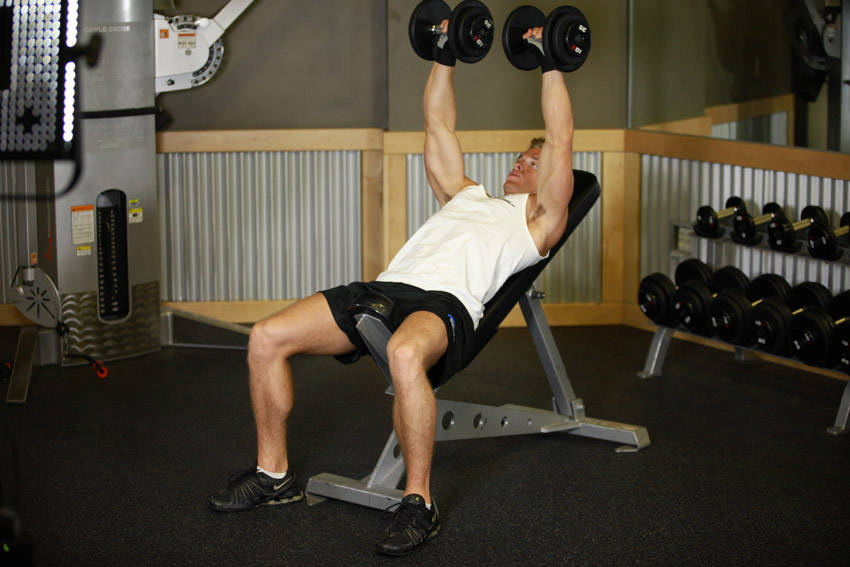

- Lie back on an incline bench with a dumbbell in each hand atop your thighs. The palms of your hands will be facing each other.
- Then, using your thighs to help push the dumbbells up, lift the dumbbells one at a time so that you can hold them at shoulder width.
- Once you have the dumbbells raised to shoulder width, rotate your wrists forward so that the palms of your hands are facing away from you. This will be your starting position.
- Be sure to keep full control of the dumbbells at all times. Then breathe out and push the dumbbells up with your chest.
- Lock your arms at the top, hold for a second, and then start slowly lowering the weight. Tip Ideally, lowering the weights should take about twice as long as raising them.
- Repeat the movement for the prescribed amount of repetitions.
- When you are done, place the dumbbells back on your thighs and then on the floor. This is the safest manner to release the dumbbells.
This exercise appears in Programmd training programs. Take the quiz to find one for your gym.
Find my program